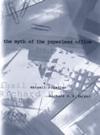

|  |
| About IR |
| Editors |
| Author instructions |
| Copyright |
| Author index |
| Subject index |
| Search |
| Reviews |
| Register |
| Home |
Sellen, Abigail J. & Harper, Richard H.R. The myth of the paperless office. Cambridge, MA: MIT Press, 2002. xi, 231p. ISBN 0-262-19464-3. £16.95
The question driving the work behind this book is one that anyone in the information world must have thought about:
...why, when we have all the latest technology to allow us to work in the digital world, do we depend on paper so heavily? Indeed, why are most workplaces so dependent on paper? It seems that the promised "paperless office" is as much a mythical ideal today as it was thirty years ago.
Rather than aimlessly theorising about these questions, the authors of this excellent text actually tried to find answers - and succeeded. In doing so, they not only answer the questions but expose the methods they used in a way that will benefit other researchers seeking to discover how not only paper but information generally is used in organizations.
The book is effectively in three parts, although these are not signalled in the structure of the chapters: the introduction and Chapter 2 (What's wrong with paper) set out the background to the study, presenting the concept of the 'affordances' of paper (that is, the properties of paper that determine the possibilities for actions involving paper), and offering two case studies of attempts to create the "paperless office" of recent mythology. The authors show that one of these attempts generally succeeded, because the organization was not bent upon getting rid of paper, but upon creating change in the organization and using the symbolism of getting rid of paper, where it was appropriate to do so, to assist the process of change. In fact, in this organization, paper continued to be used, but on a much smaller scale than before because of the other organizational changes and the adoption of appropriate technology. In the second organization, however, the attempt to get rid of paper was the at the centre of the change process and it failed because the ways people worked did not change. To succeed, the focus should have been on changing the working processes, with the reduction in the need for paper coming as a consequence of those changes.
The second part of the book consists of Chapters 3, 4 and 5, which address key aspects of the affordances of paper: the use of paper in "knowledge work", reading from paper, and paper in support of working together.
I must admit that I am not convinced by the proposition that, suddenly, at the end of the 20th century, 'knowledge work' began to dominate business, industry and society at large. 'Knowledge' has always been the basis of work, which depends upon the skill, experience, understanding, intelligence and imagination of the worker. That was as true in the days of the hand-loom weaver as it is in the days of the computer user. Indeed we might argue that the knowledge of the hand-loom weaver was much greater than that of the machine-minder in a modern textile factory. However, that is an aside: let's move on.
On this aspect of the use of paper, the locus of the research was the International Monetary Fund in Washington, DC, specifically the work done by the economists in the IMF. As a result of the research (supported by Xerox's research laboratories in Cambridge (UK), where they were working at the time) the authors discovered that, "...paper supports at least five important aspects of knowledge work:"
- It supports authoring work...
- Knowledge workers review documents on paper, especially their colleagues' work.
- When they plan... they use pencil and paper...
- Paper supports their collaborative activities...; and
- Paper helps knowledge workers grease the wheels of organizational communication... workers will print out a hard copy and hand-deliver it themselves...
I suspect that all of these, except the last, are universally true: in many organizations, however, people complain of information overload because too many documents are delivered as attachments to e-mail messages!
The authors conclude that:
...there were complex reasons for the persistence of paper, the most significant of which is that paper serves the IMF's knowledge workers well for the tasks they have to hand. These individuals use paper at certain stages in their work not because they are unwilling to change, but because the technology they are provided with as an alternative to paper does not offer all they need.
Chapter 4, 'Reading from paper', deals with the preference for paper, over the screen, for reading, and notes that paper has the following advantages:
- it allows flexible navigation through documents;
- it facilitates cross-referencing of more than one document at a time;
- it allows easy annotation; and
- it allows interweaving of reading and writing.
Fifteen people were involved in this part of the investigation, ranging from an airline pilot, through a real estate agent and two anaesthetists, to a marketing manager and a social worker. The research revealed a preference for paper over the screen, different ways of reading, and reading as an activity carried out in conjunction with writing. Among other findings, the authors discuss the simultaneous use of multiple documents - which is difficult to achieve on screen, no matter how many windows one has open; and the fact that reading varies according to the complex nature of work tasks.
The third investigation looked at paper in support of people working together and was carried out in an Air Traffic Control centre, in a police force, and in a chocolate manufacturing company. In the course of these studies the authors found that paper had many roles:
- it was a flexible medium for displaying real-time information;
- it aided team co-ordination:
- it provided a 'holding station' until the information was ready to be shared;
- it supported face-to-face interaction;
- it supported retrieving, organizing and documenting an individual's knowledge; and
- it was a representation of information that often needed augmentation from other sources.
The last two chapters (6 and 7) constitute the third part of the book and deal with the relevance of the investigations for the design of new technology, and with the future of paper in the digital world.
Not surprisingly, the authors conclude that the design of new technologies for assisting organizational work needs to take into account the 'affordances' of paper, so that workers may work with both media to accomplish organizational aims.
In summary, anyone interested in how paper and digital technologies interact, how paper facilitates many organizational functions, and how to conduct research into these issues, will find this a very rewarding text. Every over-enthusiastic student who believes that the computer can solve every organizational issue should be required to read it - indeed, every IT director, Board member, and middle manager who might be affected by ill-considered change efforts should read it. They will all make better decisions about the appropriate use of technology (and paper) as a consequence.